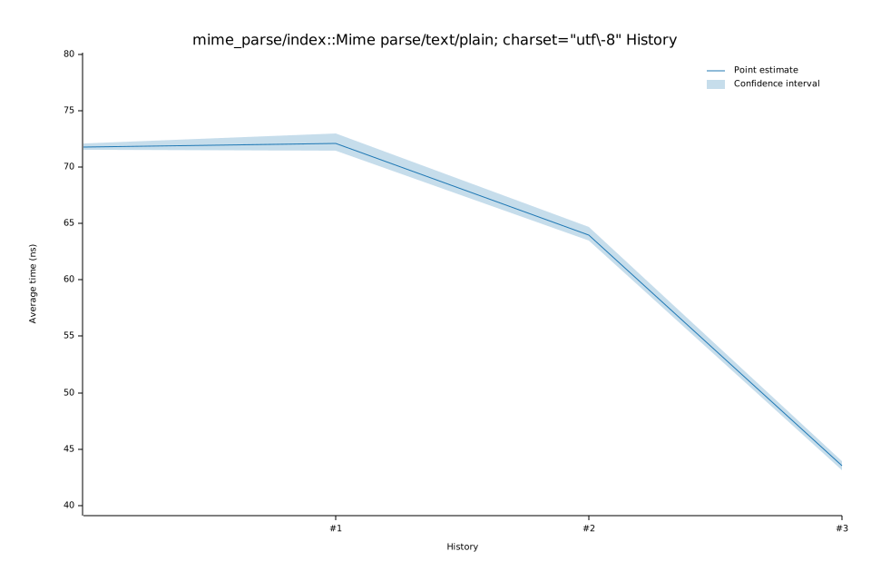

# 32025-10-15T12:58:50-07:00
|
Lower Bound |
Estimate |
Upper Bound |
| Value: |
43.12ns |
43.53ns |
43.90ns |
| Throughput: |
619.23MiB/s |
613.49MiB/s |
608.21MiB/s |
| Change in Value: |
-38.214% |
-35.460% |
-33.515% |
| Change in Throughput: |
+61.848% |
+54.942% |
+50.409% |
No change in performance detected.
# 22025-10-14T16:08:05-07:00
|
Lower Bound |
Estimate |
Upper Bound |
| Value: |
63.52ns |
64.00ns |
64.69ns |
| Throughput: |
420.41MiB/s |
417.24MiB/s |
412.77MiB/s |
| Change in Value: |
-15.936% |
-12.375% |
-8.1340% |
| Change in Throughput: |
+18.957% |
+14.122% |
+8.8543% |
No change in performance detected.
# 12025-10-14T16:04:39-07:00
|
Lower Bound |
Estimate |
Upper Bound |
| Value: |
71.48ns |
72.15ns |
73.00ns |
| Throughput: |
373.58MiB/s |
370.11MiB/s |
365.79MiB/s |
| Change in Value: |
+0.1508% |
+3.3642% |
+6.7793% |
| Change in Throughput: |
-0.1505% |
-3.2547% |
-6.3489% |
No change in performance detected.
# 02025-10-14T15:55:36-07:00
|
Lower Bound |
Estimate |
Upper Bound |
| Value: |
71.55ns |
71.82ns |
72.14ns |
| Throughput: |
373.22MiB/s |
371.82MiB/s |
370.14MiB/s |